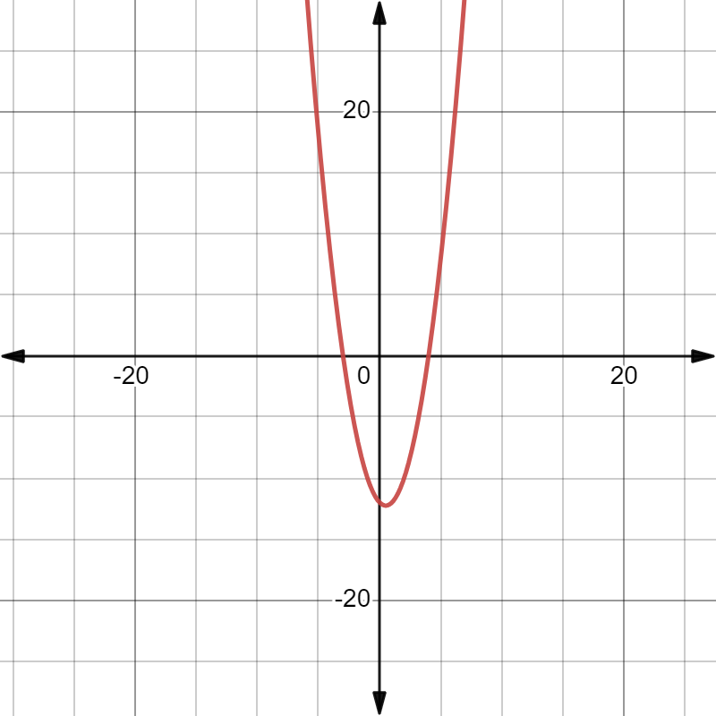

Given polynomial p(x)=x2-x-12.
List of values of p(x):
| x | -3 | -2 | -1 | 0 | 1 | 2 | 3 | 4 |
| x2 | 9 | 4 | 1 | 0 | 1 | 4 | 9 | 16 |
| x | -3 | -2 | -1 | 0 | 1 | 2 | 3 | 4 |
| x2-x | 12 | 6 | 2 | 0 | 0 | 2 | 6 | 12 |
| 12 | 12 | 12 | 12 | 12 | 12 | 12 | 12 | 12 |
| p(x) | 0 | -6 | -10 | -12 | -12 | -10 | -6 | 0 |
| (x,y) | (-3,0) | (-2,-6) | (-1,-10) | (0,-12) | (1,-12) | (2,-10) | (3,-16) | (4,0) |
Now,lets locate the points listed above on a graph paper
Result:We observe that the graph cuts the X - axis at(-3,0)and (4,0).
so, the zeros of the polynomial are -3 and 4.
Given:p(x)=x2-x-12=0
x2-4x+3x-12=0
x(x-)+3(x-)=0
(x-)(x+3=0)
x-=0 and x+3=0
x=and x=-3